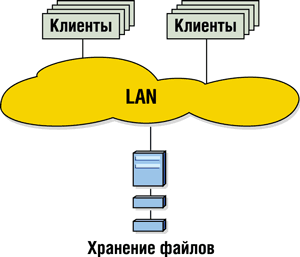
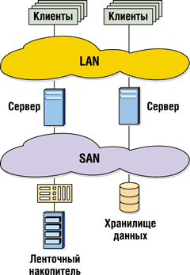

Сергей Замуруев
секретарь Ассоциации "Инфосан"
editor@infosan.ru
Сегодня системы хранения - одна из самых быстроразвивающихся областей в ИТ. И даже во времена тотального урезания бюджетов закон роста объема хранимой информации действует вне зависимости от экономической ситуации.
Direct Attached Storage
Бум на рынке систем хранения начался с распространением сетевой модели хранения данных, которая в разной форме реализована в технологиях SAN и NAS. Чтобы лучше понять преимущества сетевой модели, начнем с описания модели традиционной, которая называется Direct Attached Storage (DAS). В DAS каждый сервер имеет в своем единоличном распоряжении дисковые и ленточные накопители, их массивы или библиотеки. Другие серверы могут получить к ним доступ только при посредстве сервера-владельца.
Достоинства этой модели - всеобщая поддержка и принятые стандарты, а также дешевизна ее реализации. Недостатков же довольно много. Дисковая емкость ограничена физическими характеристиками конкретного сервера или стойки, ее невозможно наращивать без остановки работы сервера-владельца. До 30% дисковой емкости пропадает впустую. Есть ограничения на удаленность дисковой стойки от сервера, которому она принадлежит. При выходе сервера-владельца из строя данные становятся недоступными. Кроме того, трудно вести учет и администрирование дисковой емкости, разбросанной по разным серверам предприятия.
По мере роста потребности в дисковой емкости (а она может расти со скоростью до 600% в год), проблемы эти становились все более актуальными. Основной метод их решения - консолидация данных и превращение хранения данных в отдельную сетевую службу, с тем чтобы ее эффективность было легче отслеживать и корректировать. Отсюда и выросли технологии SAN/NAS.
Network Attached Storage
В технологии Network Attached Storage (NAS), аналогично тому, как принт-сервер берет на себя функции печати, NAS-сервер берет на себя хранение общих файлов пользователей локальной сети (рис. 1). По некоторым данным, первый NAS-сервер разработала в конце 80-х гг. компания Auspex (http://www.auspex.com).
|  | Рис. 1. Схема NAS.
|
Системы NAS по наличию дисковой емкости делятся на истинные NAS и шлюзы к SAN. По назначению выделяются системы уровня рабочей группы, отдела, предприятия.
Технология NAS часто производительнее систем с выделенными файл-серверами. Такие системы просты в настройке за счет ограниченной только хранением данных функциональности. Их легко масштабировать, поскольку количество NAS-серверов и их удаленность от клиентов ограничены только пропускной способностью сети. Кроме того, в числе достоинств метода - снижение издержек за счет консолидации данных, он часто оказывается дешевле выделенного файл-сервера. NAS позволяет также сэкономить на клиентских лицензиях - NAS-серверы обычно работают под управлением ОС, не ограничивающих количество клиентов, например, особых версий Linux или Windows.
Недостатки же таковы: при резервном копировании или пересылке больших объемов данных сеть бывает перегружена; не всегда очевидна безопасность данных.
Сфера применения NAS - хранение общих файлов пользователей сети, данных серверов электронной почты, баз данных, Web-хостинг, резервное копирование.
Storage Area Network
Storage Area Network (SAN) - это специальная выделенная сеть, объединяющая устройства хранения данных с серверами приложений (рис. 2). Обычно строится на основе протокола Fibre Channel. Автор идеи - компания IBM (http://www.ibm.com), впервые реализовавшая подобную технологию в мэйнфреймах S/390.
|  | Рис. 2. Схема SAN.
|
В отличие от NAS, SAN не имеет понятия о файлах: файловые операции выполняются на подключенных к SAN серверах (рис. 2). SAN оперирует блоками, как некий гигантский жесткий диск. Идеальный результат работы SAN - возможность доступа любого сервера под любой операционной системой к любой части дисковой емкости, находящейся в SAN.
Оконечные элементы SAN - это серверы приложений и системы хранения данных (дисковые массивы, ленточные библиотеки и т. п.). А между ними, как и в обычной сети, находятся адаптеры, коммутаторы, мосты, концентраторы.
SAN классифицируются по архитектуре ("точка-точка", "арбитражная петля", "фабрика"); по используемому протоколу (Fibre Channel SAN, IP и т.д.); по составу (из компонентов одного поставщика, из компонентов разных поставщиков, интегрированные в едином корпусе, или "коробочные").
Достоинства метода - высокая постоянная скорость передачи данных (от 100 Мбайт/с и более в случае Fibre Channel SAN). Локальная сеть разгружается, уже не нужно "окно резервного копирования". Большое число серверов могут иметь доступ к одному дисковому массиву. Серверы и дисковые подсистемы могут располагаться на расстоянии до 10 км (а в некоторых версиях - и 100-120 км) друг от друга.
В числе недостатков - относительно высокая цена, более сложная настройка и то, что компоненты разных производителей не всегда совместимы между собой.
Применение SAN имеет некоторые особенности, о которых мы поговорим подробнее.
Скоростной интерфейс. Самое простое и распространенное применение Fibre Channel SAN - организация очень быстрого (и, возможно, совместного) доступа к очень большим объемам данных. Большая часть установок SAN в России решает именно эту задачу. Среди потребителей можно назвать телекомпании, конструкторские бюро, финансовые организации. Так, эксперты утверждают, что для оцифровки одного часа цифрового видео с высоким разрешением требуется 100 Гбайт. Заметим, что средняя телекомпания имеет архив примерно в 400 тыс. часов.
Резервные центры хранения данных, кластеризация. Как уже говорилось выше, узлы Fibre Channel могут находиться друг от друга на расстоянии до 100 км, а работать со скоростью, которая в большинстве случаев недоступна ни Ethernet, ни SCSI, ни часто даже ATM. Напрашивается масса решений, в которых несколько серверов кластера, находящихся в разных частях здания или города, пользуются одним дисковым массивом. Данные между двумя полностью идентичными ВЦ в разных местах реплицируются по Fibre Channel. Когда сетей SAN или тяжелых дисковых массивов в организации несколько, становятся актуальными проблемы объединения SAN-островов (SAN islands), расположенных в географически удаленных офисах. Для этого можно использовать DWDM, IP, ATM.
Резервное копирование/восстановление. Всем сотрудникам более или менее крупных фирм, склонным работать сверхурочно, наверняка знакомы проблемы с пропускной способностью локальной сети по вечерам или выходным. Одной из причин может быть резервное копирование. Время, когда оно выполняется, называется "окном резервного копирования" (backup window). Кроме того, часто серверы приложений на время копирования необходимо останавливать.
Сейчас, когда компании (в том числе и российские) часто работают в автоматическом режиме 24 часа в сутки, без выходных и праздников, многие уже не готовы мириться с существованием окна резервного копирования. Особенно эта проблема актуальна для телекоммуникационных и провайдерских фирм, которые не могут себе позволить остановить серверы ни на минуту. SAN - способ ликвидировать такое окно. Это достигается с помощью техники внесерверного и внесетевого резервного копирования (Serverless и LAN-free backup). При использовании обоих подходов подразумевается, что устройство-источник (дисковый массив) и устройство-цель (ленточный накопитель) подключены к одной и той же SAN.
При внесетевом резервном копировании трафик полностью переносится из локальной сети внутрь SAN. Однако сервер приложений, данные которого копируются, вынужден "прокачивать" резервированные данные через себя. Это сильно загружает процессоры сервера. Если такое повышение загрузки недопустимо, применяют внесерверное резервное копирование (serverless backup). В этом случае между устройством-источником и устройством-целью ставится интеллектуальный мост, способный отдавать команду SCSI Extended Copy. Фактически сервер резервного копирования приказывает мосту взять блоки такие-то на устройстве таком-то и отправить на магнитную ленту. В результате данные перекачиваются через мост, а загрузка сервера приложений остается почти неизменной.
SAN или NAS?
Эти технологии дополняют друг друга, и каждая хороша для решения своих задач. В SAN совместный доступ двух клиентов даже к одному тому - задача нетривиальная, для ее решения требуется особое ПО (например, Veritas SANPoint, Tivoli SANergy или ADIC CentraVision). В NAS она решается через 10 мин после подключения оборудования. NAS зависит от локальной сети, SAN - сама по себе локальная сеть. Поэтому взаимопроникновение технологий также имеет место. Внутри NAS-серверов старших моделей часто находятся коммутаторы Fibre Channel. Кроме того, существуют NAS-шлюзы к SAN. Например, IBM TotalStorage 300G подключается к дисковому массиву Shark или сети Fibre Channel SAN и обеспечивает доступ к его дисковой емкости по локальной сети.
Согласно стратегии развития систем хранения данных уровня предприятия, принятой в Compaq (http://www.compaq.com) и известной под названием ENSA-2, технологии SAN и NAS сливаются в одно целое и пользуются единой дисковой емкостью. Только продукты линейки SAN дают к этой емкости доступ на уровне блоков, а NAS-продукты - на уровне файлов. Однако Compaq все же отдает предпочтение технологии SAN: как и у IBM, ее новые NAS-устройства E7000 служат лишь шлюзами к SAN и предоставляют файловый доступ к дисковому пулу предприятия.
Fibre Channel или SCSI?
Впрочем, в России трудности сугубо психологического свойства часто возникают еще до того, как заказчик начинает воспринимать аргументы в пользу SAN или NAS. Для начала системным интеграторам приходится убеждать заказчиков выбирать технику с интерфейсом Fibre Channel. Грамотные специалисты обычно прежде всего объясняют, что интерфейс Fibre Channel был разработан с учетом того, какие проблемы создавали транспортные протоколы типа IP и канальные протоколы типа SCSI. Фактически Fibre Channel совместил в себе лучшее из этих двух миров.
И здесь важно владеть цифрами. Ведь заказчик прав, но ровно настолько, насколько поверхностно он знакомился с техническими спецификациями. Он сравнивает интерфейс Ultra SCSI 160 ("Ага! 160 Мбайт/с") и Fibre Channel (100 Мбайт/с) и делает вывод о том, что ему пытаются "впарить" нечто заведомо дорогое и малоэффективное.
При этом клиент упускает из виду, что 160 Мбайт/с (или даже 320 Мбайт/с) - это пиковая пропускная способность, которая достигается довольно редко. А в случае Fibre Channel 100 или 200 Мбайт/с - это устоявшаяся (sustained) пропускная способность, притом только в полудуплексном режиме. В дуплексном же режиме скорость возрастает почти до 200 или 400 Мбайт/с (при использовании двухгигабитного Fibre Channel).
Далее, грамотный заказчик четко помнит всем известные цифры стандарта SCSI: до 16 устройств на одной шине, расстояние до 12 м. Однако эти показатели исключают друг друга. Так, реально на 12 или 25 м можно вынести только одно устройство, и при этом понадобится хорошо экранированный SCSI-кабель толщиной в руку. В случае с Fibre Channel по меди 15-20 устройств могут находиться на расстоянии 15-20 м от концентратора и обмениваться друг с другом данными на полной скорости. А если взять оптический кабель, расстояние между устройством и коммутатором может достигать 10 км. В некоторых случаях, используя мощные лазеры, можно довести его до 120 км и более.
SCSI также не годится, если к одной дисковой стойке требуется подключить более двух серверов - обычная задача кластеризации. Да, для некоторых SCSI-контроллеров выпускаются так называемые кластер-киты. Однако предел их возможностей - подключение двух серверов к одной стойке. В кольцевом или коммутируемом Fibre Channel количество серверов и дисковых массивов ограничено только числом портов на концентраторах и коммутаторах.
И наконец, цена - последнее заблуждение клиентов относительно Fibre Channel. Сегодня ситуация такова, что если брать сходные по функциональности решения, составленные из продукции одного и того же поставщика, то разница будет относительно невелика, от 5 до 15%. И этот разрыв будет сокращаться.
2Gbps Fibre Channel
Это новая версия интерфейса Fibre Channel, позволяющая передавать данные со скоростью 2 Гбит/с (около 200 Мбайт/с в полудуплексном режиме и около 400 Мбайт/с в полнодуплексном). Помимо увеличения скорости передачи данных, в 2Gbps Fibre Channel была предпринята попытка стандартизовать технику на его основе, решить проблему взаимной совместимости компонентов разных поставщиков на основе стандарта FC-SW-2. Однако достичь столь грандиозной цели, похоже, не удалось. Во всяком случае, уже после выхода первых двухгигабитных продуктов компании Compaq, IBM, Hitachi Data Systems, EMC (которые вместе контролируют до 80% мирового рынка систем хранения) заключили отдельный договор об обмене спецификациями в рамках особой организации (SNIA Verified Solutions Forum). Позднее к договору присоединились почти все сколько-нибудь заметные компании этого рынка.
IP Storage: Fibre Channel или IP?
Аппаратура Fibre Channel довольно дорога, а специалистов по ней мало. Оборудование для Gigabit Ethernet дешевле, в основном четко стандартизовано, любой системный администратор имеет опыт работы с этими стандартами. И если требуется доступ на уровне блоков, а не файлов, то почему бы не использовать IP/Ethernet для организации SAN? На этой нехитрой идее сейчас делают бизнес десятки фирм. Наиболее популярным протоколом для организации сетей хранения на основе IP считается iSCSI. Как и следует из названия, протокол этот инкапсулирует SCSI-команды в IP-пакеты, т. е. делает то же самое, что и Fibre Channel (ведь в сетях хранения внутри фреймов Fibre Channel также находятся команды SCSI-3). Сейчас идет разработка адаптеров iSCSI, которые полностью освобождают центральный процессор от всех вычислений, связанных с поддержкой как IP-стека, так и команд самого iSCSI.
Как считает Джон Вролек, глава молодой американской фирмы 3Ware, разрабатывающей устройства IP Storage, Fibre Channel разделит судьбу Token Ring. Или, во всяком случае, доля рынка устройств Fibre Channel не превысит 30% потенциального объема рынка, подобно тому, как доля Token Ring не превысила 15%, несмотря на все усилия IBM.
Впрочем, помимо организации SAN, для IP Storage есть и другие применения. Это, во-первых, объединение "островов Fibre Channel SAN" между собой по сетям масштаба города (MAN) или глобальным сетям. Для этого используются, например, iFCP (протокол, инкапсулирующий фреймы Fibre Channel, в котором инкапсулированы пакеты SCSI-3, в IP), или тот же iSCSI. Примеры трансконтинентальных SAN уже продемонстрировали компания Nishan Systems с партнерами, а также Compaq, которая объединила в единую SAN три ВЦ: американский, европейский и австралийский.
О реальной конкуренции между Fibre Channel и IP Storage речи пока не идет - технологии действительно рассчитаны на разные рыночные сегменты. Даже IBM, предложившая дисковый массив с интерфейсом iSCSI в феврале, когда еще не было даже контроллеров и для использования iSCSI приходилось устанавливать особые драйверы сетевых карт, считает IP Storage продукцией младшего уровня, что, вероятно, означает: для тех, кто не может или не хочет позволить себе Fibre Channel.
Интересно, что хотя окончательные версии iSCSI и некоторых других протоколов IP Storage еще не приняты, множество продуктов на основе iSCSI 0.6 и 0.1 уже продается или объявлено. Среди них упомянутый ранее Cisco Storage Router 5420, NAS-сервер IBM TotalStorage 200i, NAS-серверы HP, адаптеры Adaptec, Emulex и Agilent, маршрутизаторы Nishan Systems и CNT.
Storage Service Provider
Storage Service Provider (SSP) - это организация, которая представляет дисковую память по первому требованию. Экономическое обоснование услуги SSP таково: на каждый доллар, вложенный в дисковую емкость, приходится 7-8 долл. стоимости управления этой дисковой емкостью. Чтобы сократить издержки, фирма может передать свою дисковую емкость в управление SSP и платить абонентскую плату. По некоторым данным, услуги SSP становятся выгодны, если общая дисковая емкость в организации превышает 7 Тбайт.
Разумеется, сегодня аналитики прогнозируют рост продаж и курсов акций SSP. Это естественно, поскольку беспокойство корпораций за свои данные заметно увеличилось. Впрочем, само по себе хранение данных уже не столь интересно. Новая волна - фирмы типа Continuity Service Provider, т. е. компании, обеспечивающие непрерывность бизнеса. Они отвечают абсолютно за все и способны даже в случае чего снабдить бедствующую фирму столами, телефонами и компьютерами. Самый известный CSP, фирма Comdisco, купленная недавно HP, обслуживает с полсотни компаний нижнего Манхэттена в Нью-Йорке. И ей сейчас не приходится жаловаться на отсутствие бизнеса.
Виртуализация
Виртуализация позволяет снизить расходы на приобретение новых дисковых массивов за счет оптимального использования уже имеющихся. Кроме того, сокращаются издержки на администрирование, поскольку управлять большими объемами данных становится проще и дешевле.
Механизмы виртуализации скрывают частные детали систем хранения (например, информацию о производителе, тип интерфейса или физическую емкость той или иной дисковой стойки либо ленточного накопителя) и позволяют манипулировать емкостью как таковой, где бы она ни находилась и как бы ни выглядела физически.
Все виртуализованное дисковое пространство представляется администратору в виде единого пула, из которого по мере необходимости можно выделять ровно столько места, сколько требует тот или иной сервер. В отличие от привычной модели, если оказывается, что один сервер не использует выделенное ему дисковое пространство, а другому недостает места на диске, в виртуализированном хранилище можно перебросить емкость от одного сервера к другому.
Существует несколько концепций виртуализации: host-based, storage subsystem-based, in-bandи out-of-band virtualization.
Host-based virtualization, или серверная виртуализация - то, что многие годы делали менеджеры логических томов UNIX. Эти программы привязывали идентификаторы SCSI-устройств, или LUN (Logical Unit Number), к идентификаторам томов операционной системы. После такой привязки серверная ОС могла монтировать созданный логический том и пользоваться им независимо от того, где он физически расположен. Эту технику также называют "маскирование LUN".
Storage subsystem-based, или виртуализация дискового массива. То, что обычно делается в тяжелых дисковых массивах EMC, Hitachi, HP или IBM. Подобно мэйнфреймам, которые можно делить на несколько абсолютно независимых виртуальных машин, дисковый массив можно разделить на несколько логических устройств. Каждый из этих массивов адресуется отдельным LUN. Техника называется LUN mapping (назначение LUN). Как и маскирование LUN, она позволяет обеспечить доступ к дисковой емкости массива серверов под разными ОС - например, к LUN 0 имеют доступ серверы под управлением Windows, к LUN 1 - под UNIX. Однако специалисты разных фирм не могут прийти к единому мнению относительно того, считать ли два перечисленных выше метода виртуализацией.
Два других подхода к виртуализации вызывают меньше споров - может быть, просто потому, что пока недостаточно обкатаны.
In-band virtualization, внутриполосная виртуализация. Между серверами и системами хранения данных ставится устройство-посредник (in-band virtualization appliance), которое преобразует адреса виртуальных томов в адреса реальных физических блоков и пересылает сами данные от отправителя к получателю и обратно. Здесь действительно создается общий дисковый пул, и серверам ничего не известно о том, как физически хранятся запрашиваемые ими данные. Проблема здесь в том, что устройство может стать узким местом всей получившейся сети. Однако она решаема при наличии достаточного количества портов Fibre Channel и процессоров в устройстве.
И наконец, out-of-band virtualization, внеполосная виртуализация. Это то же самое, что in-band, только потоки данных не "прокачиваются" через устройство-посредник. Это устройство занимается только разрешением адресов виртуальной дисковой памяти в реальную, а к данным серверы обращаются сами. Однако для этого требуется, чтобы на каждом из серверов, подключенных к дисковому пулу, была установлена клиентская часть ПО виртуализации, что не всегда возможно. Такой подход реализует Datacore в своей программе SANSymphony 4.0.
Первой компанией, предложившей аппаратуру виртуализации, стала Compaq. Дисковый массив Enterprise Virtual Array имеет несколько отличительных особенностей. Так, в нем дисковая память распределяется подобно виртуальной памяти компьютера - в результате он может использовать больше пространства, чем реально в нем установлено. Можно мгновенно создавать точные копии разделов, которые не будут занимать дискового пространства, - система просто помечает номера блоков исходного раздела и создает виртуальный раздел, включающий в себя те же блоки, что и исходный. Когда приложения начинают запись в исходный раздел, копия остается неизменной, так как изменения записываются в другое место. В результате ОС пользователя считает, что у нее есть, скажем, два раздела по 100 Гбайт, представляющие собой копии друг друга, а на деле система использует 100 Гбайт для основного раздела и еще, например, 20 Гбайт для записи изменений, имевших место с момента копирования. Compaq называет эту технологию Vsnaps. Более того, еще одна технология, называемая Snapclones, позволяет моментально создавать копии раздела и синхронизировать их в реальном времени.
По неподтвержденной пока информации, в Hitachi Data Systems намерены пойти еще дальше. На проходившей в конце октября во Флориде выставке Storage Networking World компания представила ПО для управления своими дисковыми массивами под названием HiCommand. Среди прочих его функций упоминалась способность виртуализировать дисковую емкость одного или нескольких массивов Hitachi. Однако есть сведения, что в течение следующего года Hitachi договорится с другими производителями тяжелых дисковых массивов об обмене интерфейсами. В результате HiCommand сможет объединять в пул дисковую емкость массивов нескольких поставщиков. Впрочем, по информации Byte and Switch (http://www.byteandswitch.com), в списке возможных партнеров Hitachi отсутствует компания EMC.
Взаимная совместимость
Проблема, пока что не слишком актуальная для нашей страны, - совместимость компонентов SAN разных производителей. Этой проблемы не существовало, пока отсутствовал младший сегмент рынка систем хранения. Сети хранения покупались либо у производителей серверов, либо у специализированных компаний, например, EMC или Hitachi Data Systems.
Формальные стандарты Fibre Channel существовали и продолжают существовать, однако до сих пор их далеко не всегда соблюдают во всех подробностях. Поставщики компонентов вводили максимально допустимые отступления от стандарта, чтобы "привязать" клиентов к собственной технике и сделать свои технологии индустриальным стандартом. Но по мере расширения рынка желающих жестко зависеть от одного поставщика оставалось все меньше. Отсюда и "оргия взаимной совместимости", начавшаяся в середине этого года. Почти каждый вендор считал своим долгом заявить о совместимости своей продукции с продукцией другого поставщика. Так, компания Brocade только за лето выпустила около 15 таких пресс-релизов.
По мере развития рынка стали создаваться независимые сертифицирующие органы. Наиболее известны среди них SNIA (Storage Networking Industry Association, http://www.snia.org) и FCIA (Fibre Channel Industry Association, http://www.fibrechannel-europe.com) c ее сертификатом совместимости SANmark. Кроме того, свои программы сертификации стали запускать и производители оборудования. В России подобные цели ставит перед собой недавно созданная ассоциация "Инфосан" (http://www.infosan.ru).
Проблема решается, но до конца пока не решена. Некоторые дистрибьюторские фирмы (например, ASBIS и Ingram Micro) предлагают в этой ситуации свой подход, вводя в ассортимент готовые SAN-решения. По сути это просто комплекты техники для построения сетей хранения данных, но состоящие из оборудования, взаимная совместимость которого была проверена. Кроме того, комплекты поставляются вместе с набором рекомендаций по настройке техники.